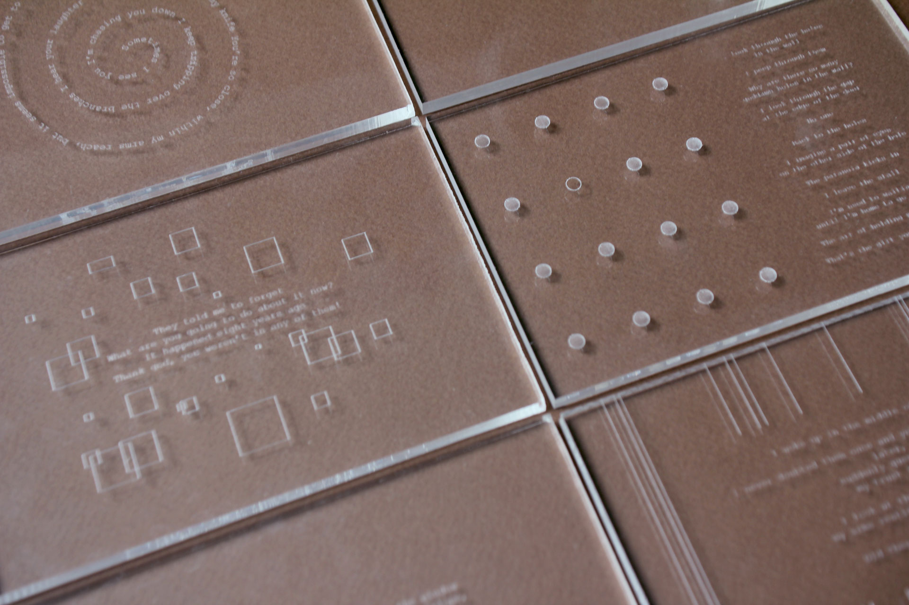
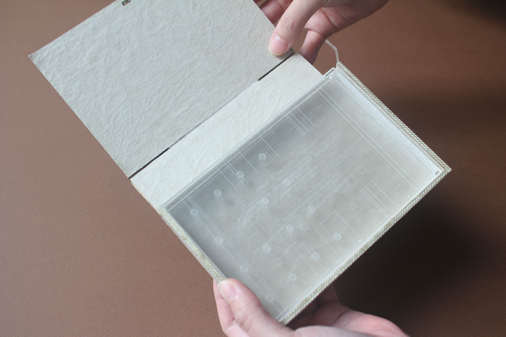
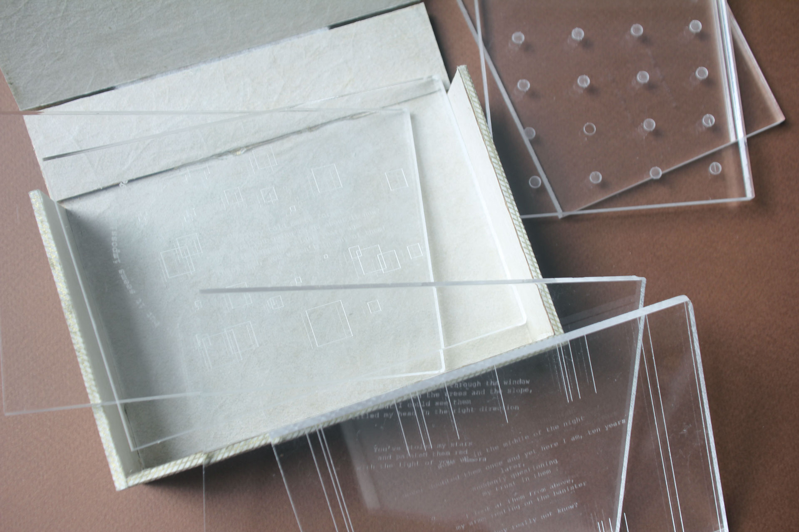
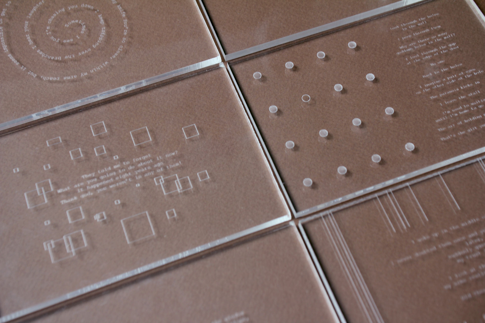
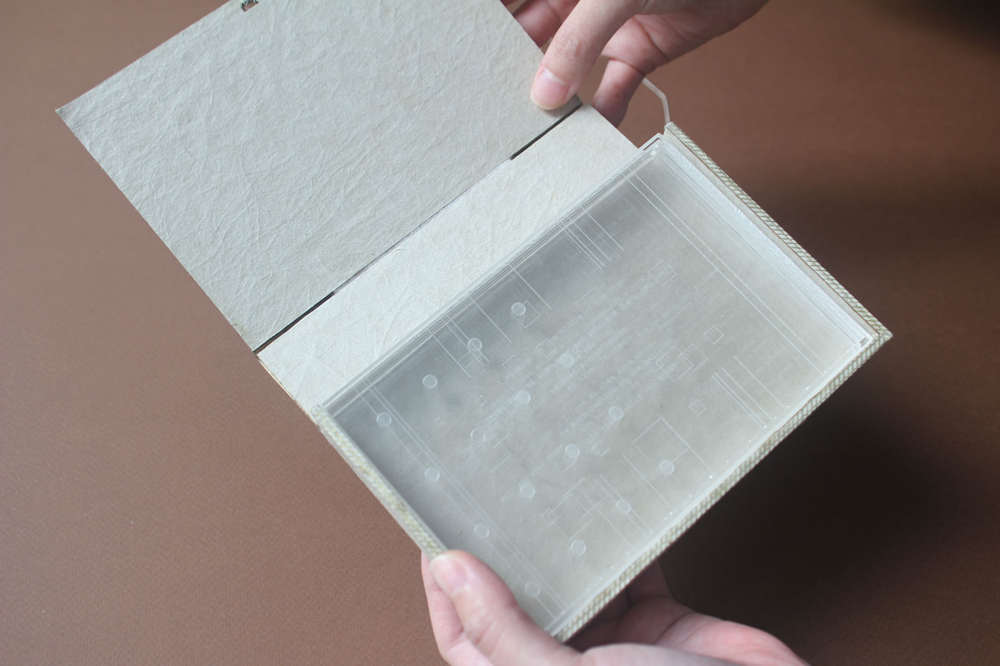
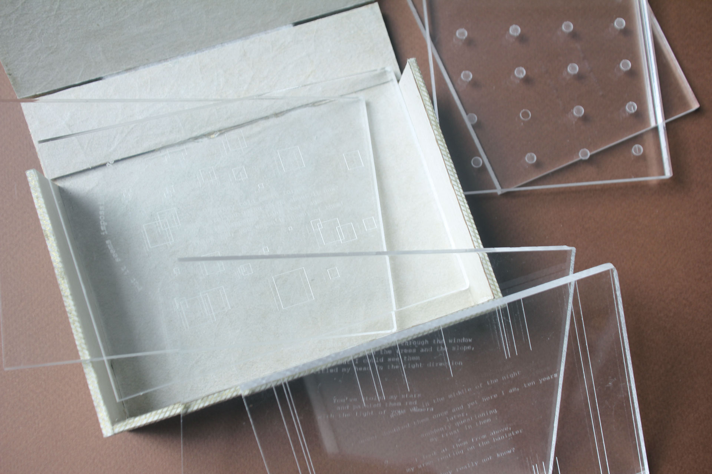

pandora’s box is a narrative object that came about from my research on online misogyny through fetishization, reproduction, and proliferation of sexually graphic media. A physical box houses journal entries that documents personal experiences with digital sexual violation.
The process behind making this object included understanding the broader issues of loss of agency and consent in the digital space. This project helped me reconcile with the amplified sense of violation through the proliferation and permanency of such content, as well as the heightened trauma of losing one’s agency due to the possible resurgence of that content.
 




